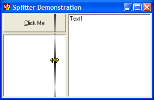

EasySplitter Code (17K)
EasySplitter Code (17K)
 Bugs: 1 / 1
Bugs: 1 / 1
 Issues: 0 / 0
Issues: 0 / 0
 Questions: 0 / 0
Questions: 0 / 0
 11 Feb 2003
11 Feb 2003
Completely revised. The new splitter code does away with the need for an additional PictureBox to
make the splitter bar, and additionally automates the resizing. Many thanks
to Sergey Pitutin for his suggestions and code.

Splitting the Easy Way
An ultra-easy to use splitter class
The EasySplitter class provided with this download completely automates most of the tasks involved with setting up a split between two objects. All you need to do is tell it which two objects you want to split and which direction to split and it does the rest.
Using the Class
In the download you'll find the splitting implemented in the class cSplitter. The splitter container can either be the main form itself, or, more flexibly, a PictureBox within the form. Once you've decided which, then identify the two objects you want to allow splitting and the direction of splitting. The splitter can either be horizonal, in which case it splits from right-left or it can be vertical, when it splits from top to bottom of the container. With this information you're ready to set up the splitter. The basic code you'll always use is as follows:
Option Explicit
Private m_cSplit As cSplitter
Private Sub Form_Load()
Set m_cSplit = New cSplitter
m_cSplit.Orientation = cSPLTOrientationVertical ' or ..Horizontal
' Set the container for the splitter
m_cSplit.Container = picSplit
' The two controls to split
m_cSplit.Bind ctl, ctlRight
End Sub
' Forward mouse and resize events to the splitter:
Private Sub picSplit_MouseDown( _
Button As Integer, _
Shift As Integer, _
x As Single, y As Single)
m_cSplit.MouseDown Button, Shift, x, y
End Sub
Private Sub picSplit_MouseMove( _
Button As Integer, _
Shift As Integer, _
x As Single, y As Single
m_cSplit.MouseMove Button, Shift, x, y
End Sub
Private Sub picSplit_MouseUp( _
Button As Integer, _
Shift As Integer, _
x As Single, y As Single
m_cSplit.MouseUp Button, Shift, x, y
End Sub
Private Sub picSplit_Resize()
m_cSplit.Resize
End Sub
Once you've set that up, you can then start more detailed configuration of the splitter if needed. The detailed properties are as follows:
- FullDrag
Gets/sets whether the contents of the split controls are resized as splitting is happening, like in Windows Explorer, or whether a drag line is displayed. This property defaults to True but you might want to turn it off if you have a lot of controls to split. - KeepProportion
Gets/sets whether the splitter resizes the panes in the same proportion when the container is resized. Defaults to False. - SplitterSize
Gets/sets the size of the splitting area, in pixels. Defaults to 4 pixels. - MinimumSize(pane)
Gets/sets the minimum allowable size of a the top/left or bottom/right pane, in pixels. Defaults to 8 pixels. Set to 0 or less if you don't want any minimum size. - MaximumSize(pane)
Gets/sets the maximum allowable size of a the top/left or bottom/right pane, in pixels. Defaults to no maximum - set the value to a 0 or less if you don't want a maximum size. - Position
Gets/sets the position of the splitter. - Proportion
Gets/sets the proportion of the containers width occupied by the top/left pane, as a percentage.
Even Easier
Note that if you want you can easily convert this object into a control. All you need to do is change all references to the Container object to refer to the UserControl, and then move the MoseDown, MouseUp, MouseMove and Resize code to the appropriate events in the user control. Then provide some nice code for setting the colour and persisting the properties and you're away.